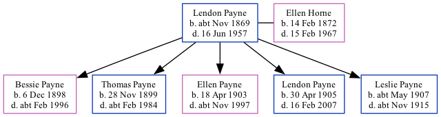

Lendon Goodwin Payne cNov 1869 - 1957
[ Home ] | [ Calendar ] | [ Surnames Index ] | [ Family History ], Lendon Payne, the husband of Ellen Mary Ann Horne (the great-great-aunt of Nigel Horne), was born in Kings Cross, London, England <i>c.</i> Nov 1869<span class="citation">1,2</span> and married Ellen (with whom he had 5 children: <a href="I2521.html">Bessie Charlotte</a>, <a href="I2522.html">Thomas Tusting</a>, <a href="I2523.html">Ellen Barbara</a>, <a href="I2524.html">Lendon Harrison</a> and <a href="I2525.html">Leslie Fitzhugh</a>) at Warwick Gardens Methodist Chapel, Kensington, London, England on May 26, 1898<span class="citation">4</span>.</p><p>Throughout his life, he lived on 71 Grange Road, Margate, Kent, England on Apr 2, 1911<span class="citation">6</span>; and at 24 Tudor Court North, Wembley, London in 1938<span class="citation">5</span>. During 1890, he was serving in the army (<em>regiment: Medical Staff Corps; Service number: 9002</em>).<p>He died on Jun 16, 1957 in Willesden, London<span class="citation">2,3</span>.
Children
- Bessie Charlotte was born on Dec 6, 1898
- Thomas Tusting was born on Nov 28, 1899
- Ellen Barbara was born on Apr 18, 1903
- Lendon Harrison was born on Apr 30, 1905
- Leslie Fitzhugh was born c. May 1907
Citations
- England & Wales births 1837-2006 - Findmypast
- England & Wales deaths 1837-2007 - Findmypast
- England & Wales Government Probate Death Index 1858-2019 - Findmypast
- England & Wales Marriages 1837-2005 - Findmypast
- Electoral Register
- 1911 Census for England & Wales - Findmypast (was age 41 and the head of the household)
Media
Ellen Horne - Loudon Payne - Marriage

England & Wales births 1837-2006 - BMD/B/1869/4/AZ/000527/325
England & Wales marriages 1837-2005 - BMD/M/1898/2/AZ/000288/084
1939 Register Transcription - TNA-R39-0953-0953A-008-39
British Army Service Records - GBM/WO97/5664/993510
England & Wales deaths 1837-2007 - BMD/D/1957/2/AZ/000763/052
England & Wales Government Probate Death Index 1858-2019 - GBOR/GOVPROBATE/C/1957-1957/00151747
Family Tree
Generated by Ged2Site. Last updated on Jul 20, 2025